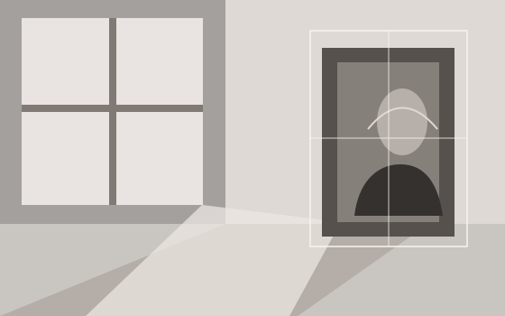
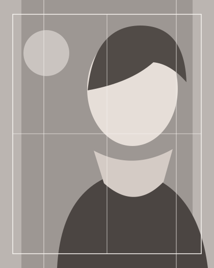
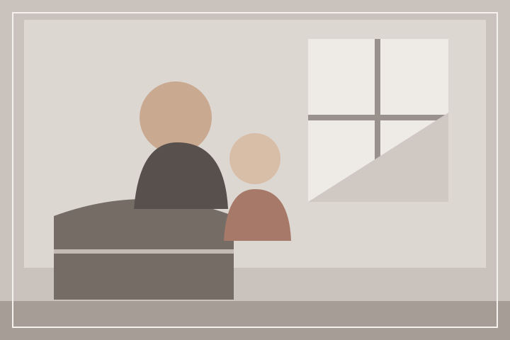
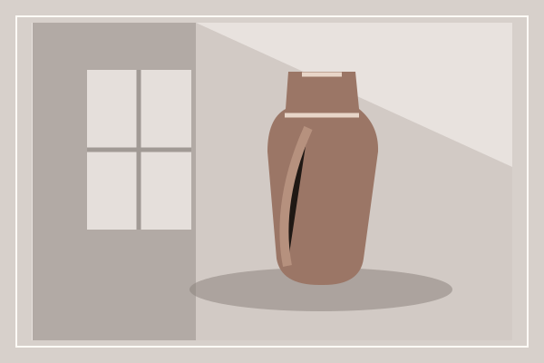
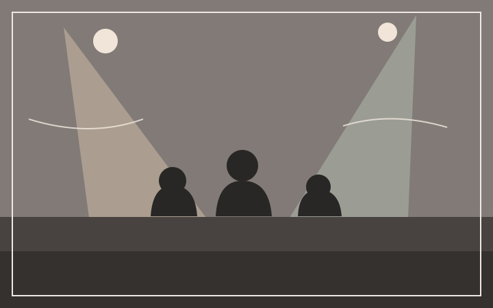
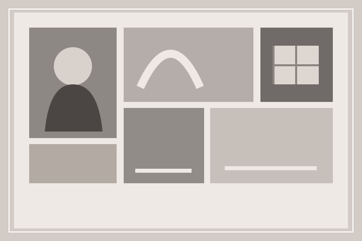

Portre
Kişisel portre, profil ve yaratıcı portre çalışmaları için çekim planı.


Portre, aile, ürün ve etkinlik çekimleri için tarih uygunluğu ve teklif isteği.
Çekim talebi oluşturÖRNEK TEMA
GERÇEK STÜDYO DEĞİLDİR
Bu örnek sayfa; çekim türlerini, çalışma kapsamını ve tarih talebini tek bir akışta toplar. Görsel çalışmalar, portföy yerleşimini göstermek için çizilmiştir.
İşletme adı, gerçek çekimler, hizmet ayrıntıları ve iletişim kanalı teslim öncesinde stüdyo tarafından eklenir.
Örnek kapsam · stüdyo tarafından düzenlenir
Portre
Kişisel portre, profil ve yaratıcı portre çalışmaları için çekim planı.
Işığın yönü değişir.
Özen aynı kalır.
Aile ve yaşam

Birlikte geçirilen zamanı ve günlük anları belgelemeye yönelik çekim.
Ürün

Katalog, çevrim içi mağaza veya tanıtım ihtiyacı için ürün görselleri.
Etkinlik

Etkinlik akışı, mekân ve ayrıntıları kapsayan çekim talebi.
Çekim kapsamı ve teslim ayrıntıları, gerçek stüdyo bilgileriyle netleştirilir.
Talep notunda çekim türünü, tercih ettiğiniz tarihi ve ihtiyacınızı paylaşın. Stüdyo; tarih uygunluğunu, kapsamı ve teklif ayrıntılarını ayrıca yanıtlar.

TARİH · KAPSAM · TEKLİF
Tarih seçiminiz uygunluk garantisi değildir. Stüdyo talebinizi inceleyip kapsam ve teklif için geri dönüş yapar.
Bu metin yalnızca bu sayfada hazırlanır; gönderilmez.